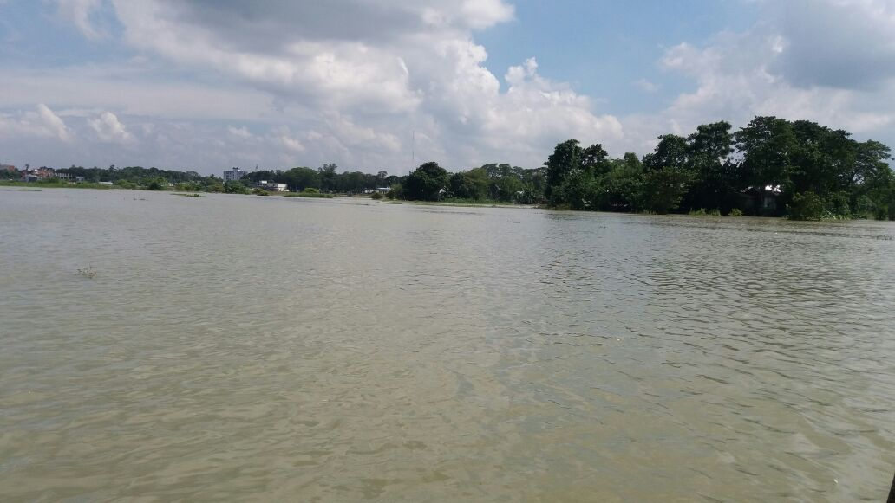

about detakhum
Debotakhum is located in Roangchhari upazila Bandarban district. Natural Bandarban is said to be the paradise of Khum and the crown of excellence of this kingdom will undoubtedly go to Devatakhum. According to the locals, this khum is about 50-60 feet deep and 700 feet long which is much bigger than Velakhum and much more wild.

talking from the second branch
try to creat first branc